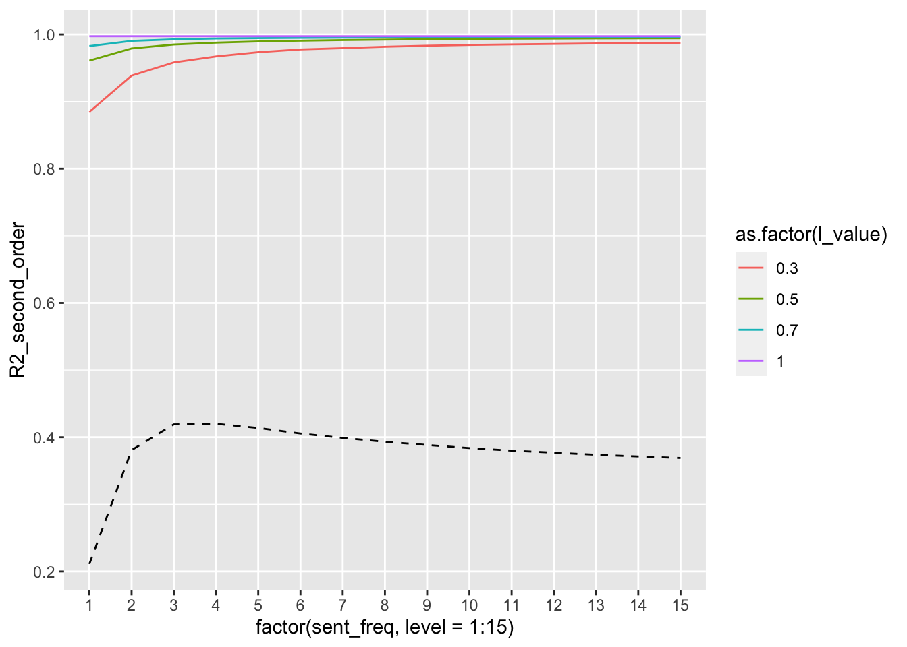

The following objects are masked from 'package:dplyr':
between, first, last
The following object is masked from 'package:purrr':
transpose
library(tm)
Loading required package: NLP
Attaching package: 'NLP'
The following object is masked from 'package:ggplot2':
annotate
n_words_matt <-1000band_width_matt <-50#rows are words, columns are sentencesband_matrix_matt <- Matrix::bandSparse(n = n_words_matt,k=0:band_width_matt)band_matrix_matt <-as.matrix(band_matrix_matt)*1# the following use functions from Rsemanticlibrarian# get all unique words from training textdictionary_words_matt <-1:n_words_matt# create a list of sentences by index in dictionarysentence_ids_matt <-list()for(i in1:ncol(band_matrix_matt)){ sentence_ids_matt[[i]] <-which(band_matrix_matt[,i] ==1)}#create random environment vectors for each word in dictionaryenvironment_matt <-sl_create_riv(10000,length(dictionary_words_matt),8)# make ITS sentence memory# for each sentence, sum the environment vectors for the words in the sentenceits_memory_matt <-matrix(0,ncol=dim(environment_matt)[2],nrow=length(sentence_ids_matt))for(i in1:length(sentence_ids_matt)){if(is.null(nrow(environment_matt[sentence_ids_matt[[i]],]))){ its_memory_matt[i,] <- environment_matt[sentence_ids_matt[[i]],] } else { its_memory_matt[i,] <-colSums(environment_matt[sentence_ids_matt[[i]],]) }}words_to_plot_matt <-c(1:100)# function to generate echoes for a list of wordssubset_semantic_vectors <-function(strings,dictionary,e_vectors,sentence_memory,tau=3){ word_meaning <-matrix(0, ncol =dim(e_vectors)[2],nrow =length(strings))for (i in1:length(strings)) { word_id <-which(dictionary %in% strings[i]) probe <- e_vectors[word_id, ] activations <-cosine_x_to_m(probe, sentence_memory) echo <-colSums(as.numeric(activations ^ tau) * (sentence_memory)) word_meaning[i, ] <- echo }row.names(word_meaning) <- stringsreturn(word_meaning)}word_semantic_vectors_matt <-subset_semantic_vectors(words_to_plot_matt, dictionary_words_matt, environment_matt, its_memory_matt,tau=3)cosine_matt <- lsa::cosine(t(word_semantic_vectors_matt))# Ground truths to compare to: first- and second- order similarityfirst_order_cosines_matt <- lsa::cosine(t(band_matrix_matt[words_to_plot_matt,]))second_order_cosines_matt <- lsa::cosine(t(first_order_cosines_matt))matt_R2_first <-cor(c(cosine_matt),c(first_order_cosines_matt))^2matt_R2_second <-cor(c(cosine_matt),c(second_order_cosines_matt))^2
Making minor changes and comparing to Matt’s code
n_words <-130band_width <-10# Setup of word-sentence co-occurence matrixband_matrix <- Matrix::bandSparse(n = n_words,k=0:(band_width-1))band_matrix <-as.matrix(band_matrix)*1# ITS setup (each word appears in the same number of sentences)dictionary_words <-1:n_wordssentence_ids <-list()for(i in1:ncol(band_matrix)){ sentence_ids[[i]] <-which(band_matrix[,i] ==1)}sentence_ids <- sentence_ids[11:119]environment <-sl_create_riv(10000,length(dictionary_words),8)words_to_plot <-c(11:110)
# Ground truths to compare to: first- and second- order similarityfirst_order_cosines <- lsa::cosine(t(band_matrix[words_to_plot,]))second_order_cosines <- lsa::cosine(t(first_order_cosines))
I’ve changed three things in Matt’s code: i) changing the bandwidth from 11 to 10; iii) making sure each sentence has the same number of words (i.e. 10); ii) including prior memory (i.e. noise) into ITS memory. Our first-order R-squared values are similar, but my second-order R-squared is slightly higher?
Comparing the number of sentences required for adequate learning at different L
Using the R-squared between ITS and the second-order word-word similarities as the metric, we can find out, given a L value (e.g. L = .3, .5, .7), how many sentences a subject needs to obtain learning comparable to when L = 1.0.
No discrepancy encoding (L = 1.0, i.e. point of comparison)
The MINERVA-AL discrepancy encoding code seems to be working well. The first few traces encoded have much higher values than the last few traces encoded (when each sentence had already been presented around 14 times before).
ggplot() +geom_line(data = R2_no_de, aes(x =factor(sent_freq, level =1:15), y = R2_second_order, group =as.factor(l_value), color =as.factor(l_value))) +geom_line(data = R2_de, aes(x =factor(sent_freq, level =1:15), y = R2_second_order, group =1), linetype ="dashed")

Does this mean that, with discrepancy encoding, learning can never reach the same level as that without discrepancy encoding? Also, does this mean that discrepancy encoding even performs worse than no discrepancy encoding at a low learning rate (e.g. L = 0.3)?